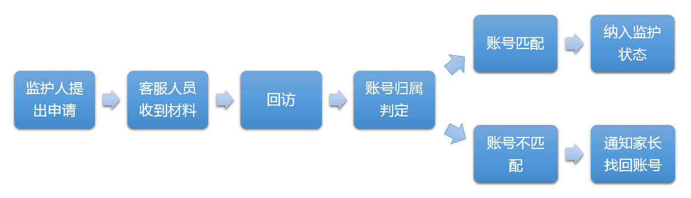

>监护申请流程

流程介绍详细说明
监护人提出申请
- 1. 主动控制游戏时间。游戏只是学习、生活的调剂，要积极参与线下的各类活动，并让父母了解自己在网络游戏中的行为和体验。
- 2. 不参与可能耗费较多时间的游戏设置。不玩大型角色扮演类游戏，不玩有PK类设置的游戏。在校学生每周玩游戏不超过2小时，每月在游戏中的花费不超过10元。
- 3. 不要将游戏当作精神寄托。尤其在现实生活中遇到压力和挫折时，应多与家人朋友交流倾诉，不要只依靠游戏来缓解压力。
- 4. 养成积极健康的游戏心态。克服攀比、炫耀、仇恨和报复等心理，避免形成欺凌弱小、抢劫他人等不良网络行为习惯。
- 5. 注意保护个人信息。包括个人家庭、朋友身份信息，家庭、学校、单位地址，电话号码等，防范网络陷阱和网络犯罪。
疑似账号身份确认期（15 个自然日）
- 在判断申请材料完整的情况下，我司将通过官方邮箱联系疑似帐号归属者，告知其在 15 个自然日内将按照监护人需求对其账号进行相关操作，并要求疑似账号归属者提供身份材料以便我司判定其与监护人监护关系；
- 若疑似账号归属者在 15 个自然日内不能提供有效身份证明或逾期提供，则默认为疑似账号归属者与被监护人身份相符。我司即按照监护人申请要求，对其游戏账号纳入防沉迷系统；
- 若疑似账号归属者在 15 个自然日内提供的身份证明与被监护人相符，我司即按照监护人申请要求，对其游戏账号纳入防沉迷系统；
- 若疑似账号归属者在 15 个自然日内提供的身份证明与被监护人不符，我司则无法判定其与被监护人的身份关系。在此情况下，为保障用户游戏账号安全，我司将通知监护人通过公安机关出具账号找回协查证明，由我司协助被监护人找回游戏账号后再进行后续操作；